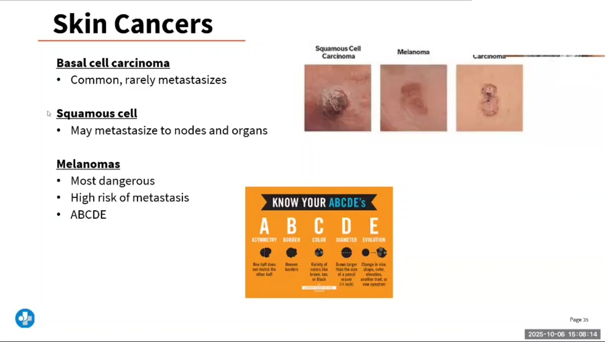
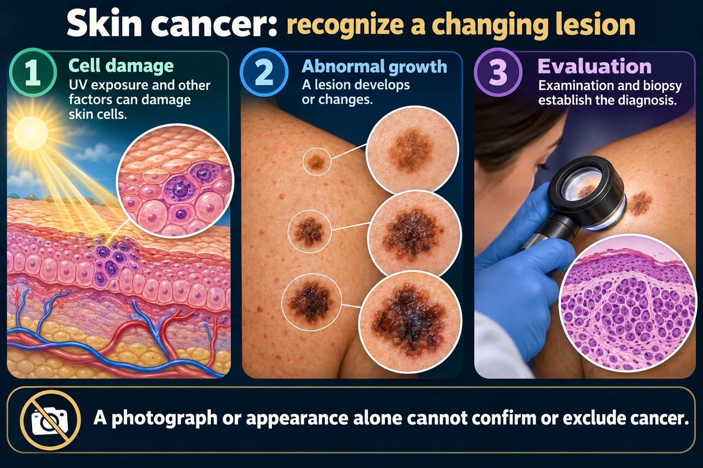

Skin Cancer ☀️
Basal cell · Squamous cell · Melanoma — and the ABCDE that catches the deadly one
Skin cancer is uncontrolled growth of skin cells after their DNA has been damaged — nearly always by ultraviolet light. Which cell mutates decides which cancer you get: the basal layer → basal cell carcinoma, the keratinocytes above it → squamous cell carcinoma, the melanocytes → melanoma. The layers are drawn on NG-051; this page shows what happens when each one goes wrong.
📄 Simple Nursing original — opens in Drive →
Preview the Simple Nursing sheet here
WHY IT HAPPENS
STEP 1 · CAUSEUltraviolet light breaks DNA. Enough breaks in the wrong genes and the cell stops obeying the "stop dividing" signal.

☀️ UVA vs UVB — how deep the damage goes

A photograph or appearance alone cannot confirm or exclude cancer.
Read the picture
Cell damage
UV exposure and other factors can damage skin cells.
Abnormal growth
A lesion develops or changes.
Evaluation
Examination and biopsy establish the diagnosis.
Melanoma clues
Asymmetry, irregular border, varied color and evolution; size alone is not decisive.
Other clues
A nonhealing sore, recurrent bleeding or a changing raised lesion needs review.
Prevention
Sun protection and avoiding tanning devices reduce UV exposure.
UVB is mostly absorbed in the epidermis — it causes sunburn and directly damages keratinocyte and melanocyte DNA. UVA penetrates into the dermis, driving photo-ageing and also contributing to cancer. Tanning beds emit high-intensity UVA and are a recognized carcinogen — a tan is DNA damage made visible.
⚠️ Risk factors — the exam list
Darker skin does not mean immunity. Skin cancer is less common in deeply pigmented skin but is more often found late — and it favors the palms, soles, nail beds and mucous membranes, which people don't check.
📖 Key terms you get tested on
- Nevus / nevi = mole(s). Melanocytic = made of pigment cells.
- Neoplasm = tumor = a new abnormal growth.
- Benign = stays put, well-defined, grows slowly, doesn't invade. Malignant = invades locally and can metastasize.
- Actinic (solar) keratosis = premalignant rough, dry, "sandpaper" scaly patch on sun-damaged skin — a precursor to squamous cell carcinoma. Treat it.
- Dysplastic / atypical nevus = irregular mole; a marker of increased melanoma risk.
- Metastasis = spread to distant sites via lymph or blood.
- Breslow depth = how many millimeters deep a melanoma has invaded — the strongest prognostic factor.
THE THREE TYPES
STEP 2 · WHICH CELL?Find the cell of origin on the cross-section and everything else about the cancer follows.
🔬 Three cells, three cancers — the origin cutaway
👁️ What they look like on the skin
⭐ The comparison table
| Feature | Basal cell (BCC) | Squamous cell (SCC) | Melanoma |
|---|---|---|---|
| Cell of origin | Basal layer keratinocytes | Keratinocytes above the basal layer | Melanocytes |
| How common | Most common skin cancer | Second most common | Least common of the three |
| How dangerous | Locally destructive; rarely metastasizes | Can metastasize — higher risk on the lip, ear, and in immunosuppressed patients | Most deadly; metastasizes early and widely |
| Classic look | Pearly/waxy papule, rolled translucent border, telangiectasias, central ulcer that bleeds and re-scabs | Firm, red, scaly, crusted nodule or ulcer; may be tender | Asymmetric, irregular-bordered, multicolored lesion that is changing |
| Where | Sun-exposed: face, nose, inner canthus, ears, head & neck | Sun-exposed: face, ears, lower lip, dorsum of hands; also chronic wounds and scars | Anywhere — including palms, soles, nail beds, scalp, mucosa and the eye |
| Precursor | — | Actinic keratosis | May arise in a pre-existing nevus or appear as a brand-new lesion |
| Typical treatment | Excision, Mohs micrographic surgery (tissue-sparing, used on the face), curettage & electrodesiccation, cryotherapy, topical agents for superficial lesions | Excision or Mohs; radiation in selected cases; treat actinic keratoses early | Wide local excision guided by depth; sentinel lymph node biopsy for staging; immunotherapy/targeted therapy for advanced disease |
🧪 Diagnosis — nothing is decided by looking
- Full-body skin examination in good light, including scalp, between toes, soles, nails, genital area — and the "ugly duckling" check: the mole that doesn't look like the patient's other moles.
- Dermoscopy to magnify surface patterns.
- Tissue biopsy is required for definitive diagnosis — but only for lesions that are genuinely suspicious (irregular, uneven, changing). Normal moles are not biopsied.
- For suspected melanoma, a full-thickness (excisional) biopsy is preferred so the pathologist can measure Breslow depth; superficial shave biopsy may under-measure it.
- Sentinel lymph node biopsy stages melanoma; imaging and LDH may be added for advanced disease.
- Photograph and map lesions for comparison over time where policy allows.
🚨 Melanoma in darker skin — the pattern that gets missed
- People with darker skin get melanoma less often but die of it more often, largely because it is found late.
- Look at the palms, soles, between the toes, nail beds, mucous membranes and the eyes — not just sun-exposed areas.
- A new, widening, irregular dark band in a nail, especially with pigment spilling onto the surrounding skin (Hutchinson sign), needs referral — not "wait and see."
- Teach sun protection to everyone. Pigment reduces risk; it does not remove it.
ABCDE — DRAWN OUT
STEP 3 · SCREENFive letters. Benign on the left, suspicious on the right, every time.
🔤 The ABCDE plate — benign vs suspicious, side by side
E is the most important letter. A lesion that is abrupt, sudden or rapidly changing in color, size or shape gets referred even if the other letters look reassuring. Add the "ugly duckling" sign: the mole that looks different from all of that person's other moles.
🚨 Other red flags to escalate
- A sore that will not heal, or heals and reopens repeatedly.
- A lesion that bleeds, oozes, crusts or itches without an obvious cause.
- New pain, tenderness or numbness in a mole.
- Redness or swelling extending beyond the border of a mole.
- Spread of pigment from a mole into the surrounding skin.
- A new pigmented lesion in an adult — most moles appear before about age 30.
- Any lesion in a chronic wound, burn scar or old radiation site (Marjolin ulcer → SCC).
✅ How to teach a monthly self-skin exam
- Once a month, in good light, after a bath or shower.
- Use a full-length mirror plus a hand mirror; ask a partner or family member for the back and scalp.
- Work in a fixed order: face → ears → neck → chest → abdomen → arms and hands (including palms, between fingers and nail beds) → back and buttocks → legs → soles and between the toes → scalp (part the hair) → genital area.
- Take photos or draw a body map so change is obvious next month.
- Report anything meeting ABCDE, anything that doesn't heal, or any "ugly duckling."
- High-risk patients should also have regular professional skin checks.
PREVENTION & TEACHING
STEP 4 · TEACHThis is where nursing actually changes the outcome — and it is heavily tested.
☀️ Sun safety, drawn
👨👩👧 Everything else the patient needs to hear
- Shade and clothing beat sunscreen. Sunscreen is the last line, not the first.
- Infants under 6 months should be kept out of direct sun and covered with clothing/shade; use sunscreen on babies only as advised by their provider.
- Some medicines cause photosensitivity — you burn much faster. Common examples include tetracyclines, sulfonamides, some diuretics, amiodarone, some psychiatric medicines, and isotretinoin (see NG-051). Ask, and teach strict sun protection.
- Radiation-therapy skin and old burn scars stay sun-sensitive for life.
- After any skin-cancer treatment: lifelong surveillance — having one skin cancer is the strongest predictor of the next.
- Address the body-image and anxiety load of facial surgery and repeated biopsies; connect to support.
🩺 Nursing care around treatment
- Before: confirm consent and site marking, review anticoagulants and allergies, explain what a biopsy or Mohs day actually involves (long day, staged excisions, repeated waiting).
- After a surgical excision: keep the dressing clean and dry per order, watch for bleeding, infection and dehiscence, teach wound care and suture-removal timing — see NG-080.
- Topical chemotherapy (for superficial lesions/actinic keratoses): warn that the treated area is meant to become red, crusted and sore before it heals; apply with gloves, avoid eyes and mucous membranes, and protect from sun.
- Cryotherapy: expect stinging, a blister, then a crust; avoid picking. Pigment change is common.
- Advanced melanoma: immunotherapy and targeted therapies bring their own toxicities (notably immune-related rash, colitis, hepatitis, thyroid and other endocrine effects) — teach patients to report new symptoms early rather than waiting.
- Always: document lesion location, size, appearance and any change, and make sure the referral actually happened.
🗺️ Where this page sits in the set
- NG-051 — Skin: the basal layer, keratinocytes and melanocytes that become these three cancers; plus the lesion vocabulary and assessment technique.
- NG-080 — Wound Care: post-excision wound care, and the chronic wound that can turn into an SCC.
- NG-182 — Dermatitis and NG-225 — Psoriasis: benign inflammatory rashes you must not mistake for cancer — and vice versa. A "patch of eczema" that never clears in one fixed spot deserves a second look.
WHAT IT LOOKS LIKE
PHOTO GUIDEPanels 5 to 8 are the four you are being asked to tell apart — rough patch, pearly bump, scaly sore, changing mole.
🖼️ Skin Conditions — visual study guide